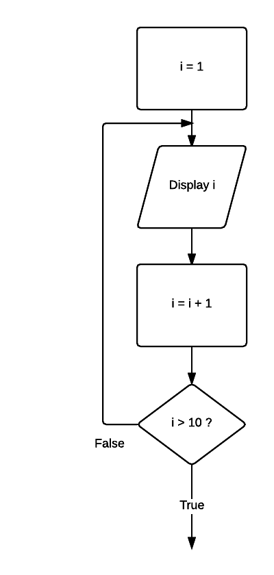

06 Post-test loop
A post-tested loop executes the body of the loop before testing the termination condition. This construct is often referred to as an unguarded loop. The body of the loop is repeatedly executed until the termination condition is true. An important difference between a pre-test and post-test loop is that the statements of a post-test loop are executed at least once even if the condition is originally true, whereas the body of the pre-test loop may never be executed if the termination condition is originally true. A close look at the representations of the two loop types makes this point apparent.
Problem
Write a set of instructions that displays all numbers between 1 to 10.
Pseudocode
i = 1 REPEAT Display i i = i + 1 UNTIL i > 10
Javascript
var i = 1;
do {
console.log(i);
i = i + 1;
} while ( !(i > 10) )
Flowchart
Open this document in Chrome and open the developer tools Windows: F12 or Ctrl-shift+I, Mac: Cmd + Opt + I.
Click run button.
Observe the console output.
Your task
Modify program.js: Display the odd numbers from 23 to 33.